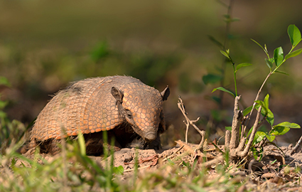
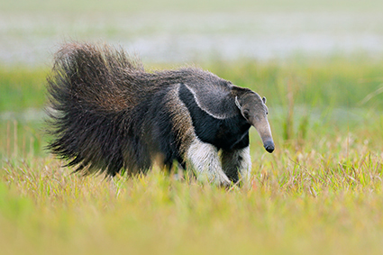
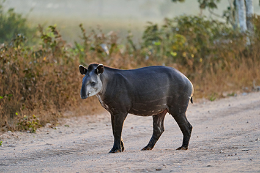
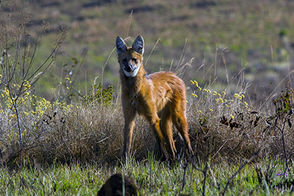

O tatupeba (Euphractus sexcinctus) alcança de a na fase adulta. Na fotografia, tatupeba em Aquidauana (MS), em 2021. Crédito: GIEDRIIUS/SHUTTERSTOCK.COM

O tamanduá-bandeira (Myrmecophaga tridactyla) tende a crescer na fase adulta entre e de comprimento. Na fotografia, tamanduá-bandeira em Aquidauana (MS), em 2018. Crédito: ONDREJ PROSICKY/SHUTTERSTOCK.COM

A anta-brasileira (Tapirus terrestres) em fase adulta pode atingir entre e de comprimento. Na fotografia, anta no estado do Mato Grosso do Sul (MS), em 2021. Crédito: JENS OTTE/SHUTTERSTOCK.COM

O lobo-guará (Chrysocyon brachyurus) pode atingir até de comprimento na fase adulta. Na fotografia, lobo-guará em São Roque de Minas (MS), em 2020. Crédito: ALEX SSCISUKAWA/SHUTTERSTOCK.COM